A screenshot and three steps for every screen. For the full reference, see the complete guide.
Most tools share the same pattern: open the tool, check the hosts to act on in the Target Hosts list, then click an action — each host's result appears in its own tab with a green (success) or red (failure) banner.
The Dashboard
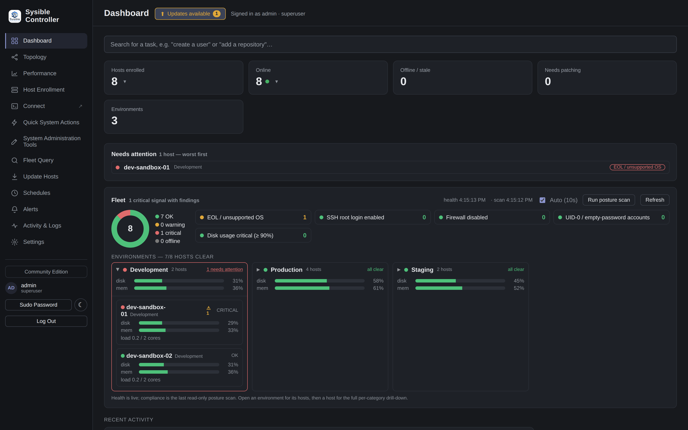
Log in; you land on the Dashboard — a search box over a column of tiles.
Type a task like create a user or open a firewall port to jump straight to the right tool.
Or click a tile to open that tool in its own window. (The Live Activity & Logs tile appears only for Superusers.)
Live Activity & Logs (Superusers only)
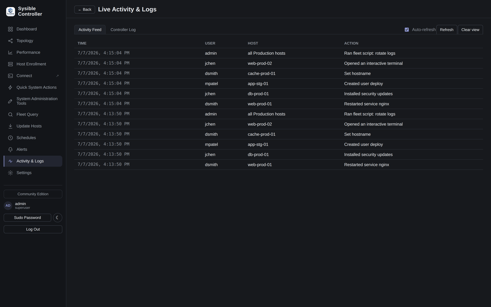
Open Live Activity & Logs from the Dashboard — visible only to Superuser administrators.
The Activity tab shows a live, plain-language feed of who did what across the fleet; the Controller Log tab tails the backend's own log.
Both auto-refresh; routine background syncs are filtered out so the feed reflects real actions.
Host Enrollment
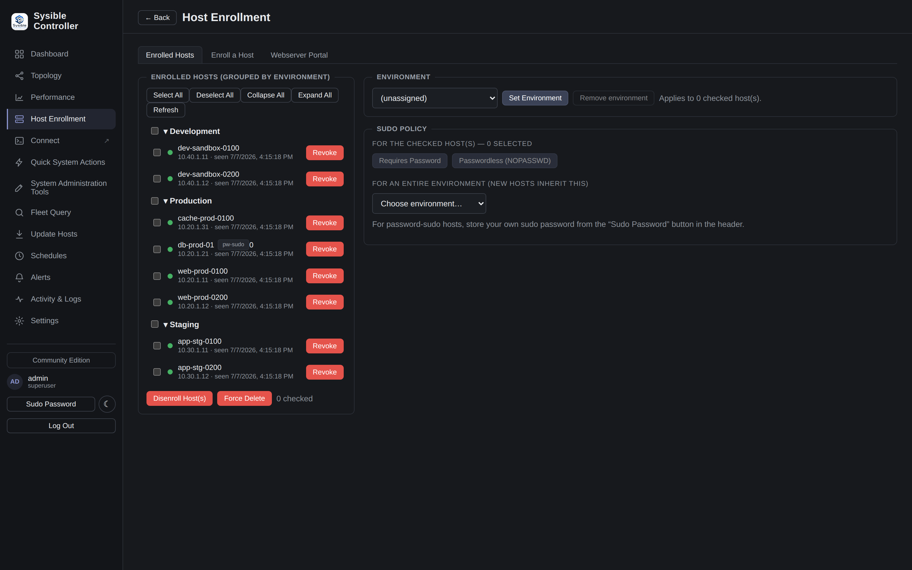
Open Sysible Controller Host Enrollment from the Dashboard.
Set a default environment, then click Download Agent Bundle and install it on the target host.
Enrolled hosts appear in the list; shift/ctrl-click several at once to Set Environment in bulk, set each host's Sudo Mode (NOPASSWD or password-required), or Disenroll Host.
Sysible Connect
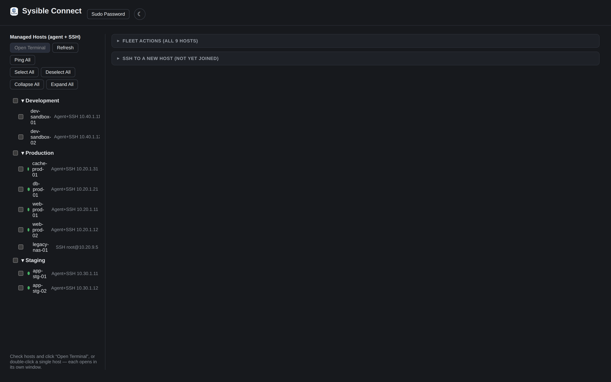
Open Sysible Connect. Agent and SSH hosts share one list, each with its IP.
Double-click a host to open a pop-out terminal (it opens as your admin user, not root); or click Open RDP… for a graphical desktop, and Send sudo password to answer a sudo prompt from your encrypted store.
Use Fleet Power Controls (Reboot / Power Off / Restart Agent on all hosts) or Run Script on All Hosts… to act fleet-wide. New SSH host? Fill SSH to a New Host and Connect Host — the password is used once, then replaced by a key.
The Terminal
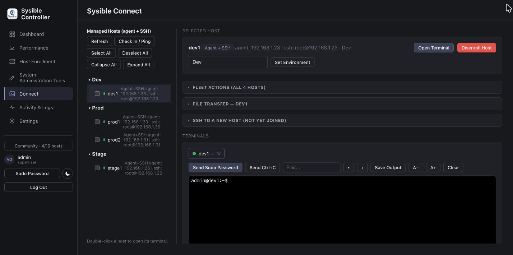
Each terminal is a real PTY — vim, top, and less render correctly.
The user@host prompt is green (red for root); the toolbar adds upload/download, find, save-output, and font sizing.
Open as many terminals as you like — sessions are independent, even multiple to the same host.
Graphical Desktop (RDP)
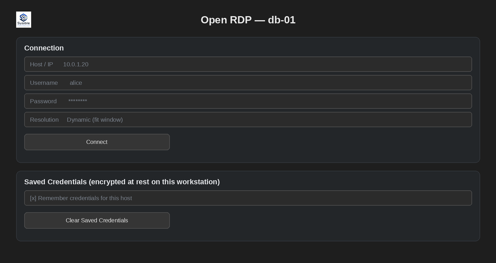
Select a host in Sysible Connect and click Open RDP….
Enter host, username, password, and resolution (the default fits the window).
Optionally remember credentials — they're encrypted on your workstation. Click Connect to launch FreeRDP (or Remmina).
User & Group Administration
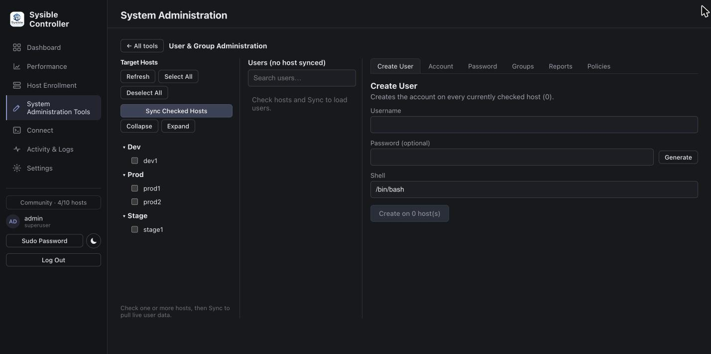
Open System Administration → User & Group Administration.
Check one or more hosts in the Target Hosts list (use Select All for the whole fleet).
Use the Create User / Account / Password / Groups tabs and click an action (e.g. Create User, Lock, Toggle Sudo). Each host's result opens in its own tab.
System Health, Logs & Recovery
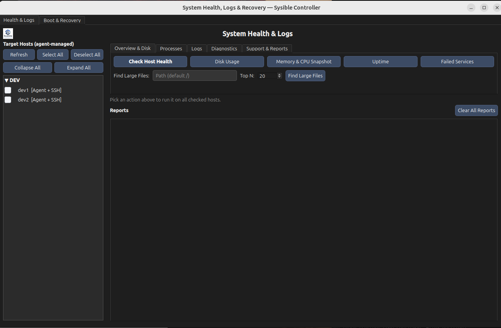
Open System Administration → System Health, Logs & Recovery (one window, two top-level tabs: Health & Logs and Boot & Recovery).
Check one or more hosts in the Target Hosts list (use Select All for the whole fleet).
On Health & Logs, click Check Host Health for a green/amber/red verdict, or use the Overview/Processes/Logs/Diagnostics tabs. On Boot & Recovery, analyze boot failures, manage GRUB and kernels — with care.
Service Management
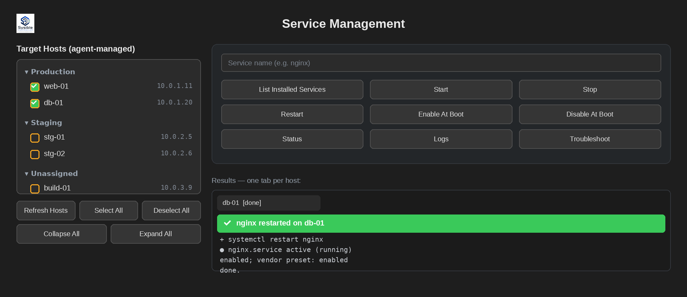
Open System Administration → Service Management.
Check one or more hosts in the Target Hosts list (use Select All for the whole fleet).
Type a service name and click Start, Stop, Restart, Enable At Boot, Status, or Logs; Troubleshoot diagnoses failures.
Environmental Policies
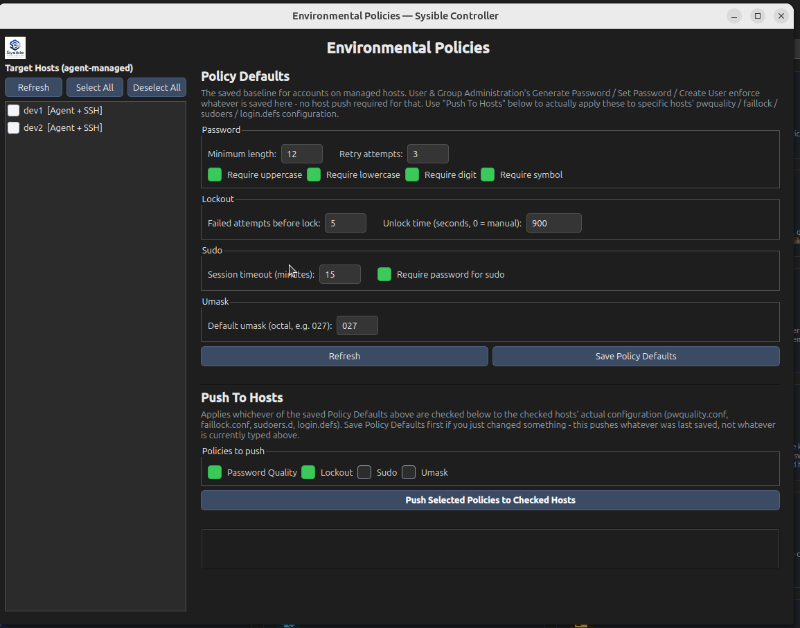
Open System Administration → Environmental Policies.
Check one or more hosts in the Target Hosts list (use Select All for the whole fleet).
Set the password, lockout, sudo, and umask baseline, then click Push Selected Policies to Checked Hosts.
Cron & Systemd Timers
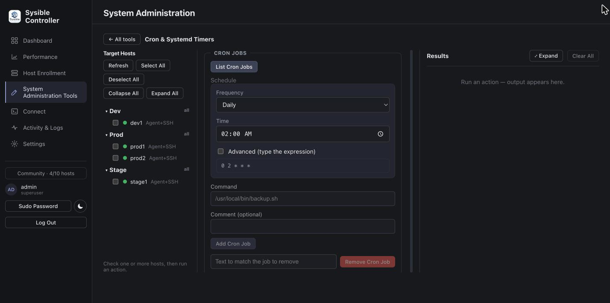
Open System Administration → Cron & Systemd Timers.
Check one or more hosts in the Target Hosts list (use Select All for the whole fleet).
Use List Cron Jobs / Add Cron Job (the schedule builder writes the syntax for you), or manage timers with Create Timer, Start, Enable At Boot.
Host Software Management
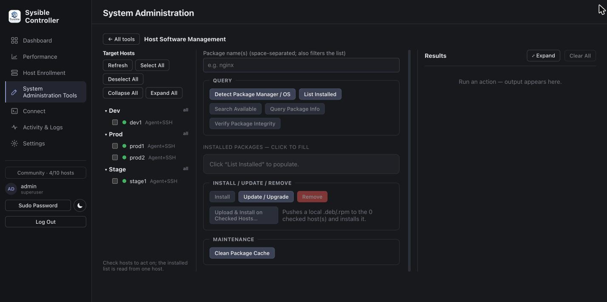
Open System Administration → Host Software Management.
Check one or more hosts in the Target Hosts list (use Select All for the whole fleet).
Click Detect Package Manager / OS, then Install, Remove, Update / Upgrade, or Query Package Info — the same buttons work across apt/dnf/yum/zypper.
Repository Management
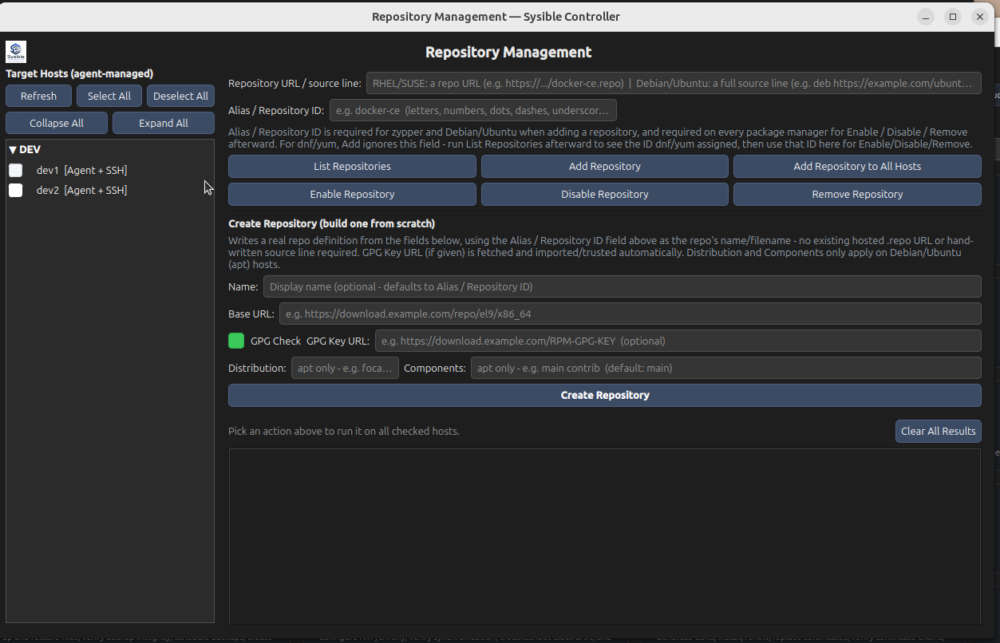
Open System Administration → Repository Management.
Check one or more hosts in the Target Hosts list (use Select All for the whole fleet).
Click List Repositories, then Add Repository (or Add Repository to All Hosts), Enable, Disable, or Remove Repository.
Network Management
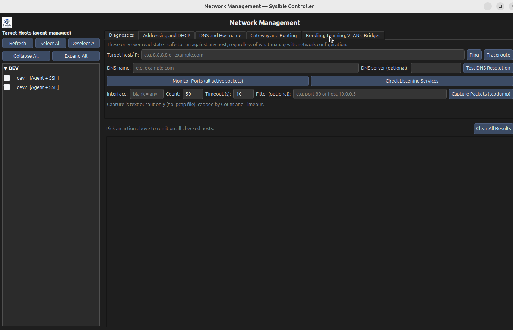
Open System Administration → Network Management.
Check one or more hosts in the Target Hosts list (use Select All for the whole fleet).
Start in Diagnostics (Ping, Traceroute, Test DNS Resolution); use the other tabs to configure addressing, DNS, routing, and bonds/VLANs/bridges.
File System Management
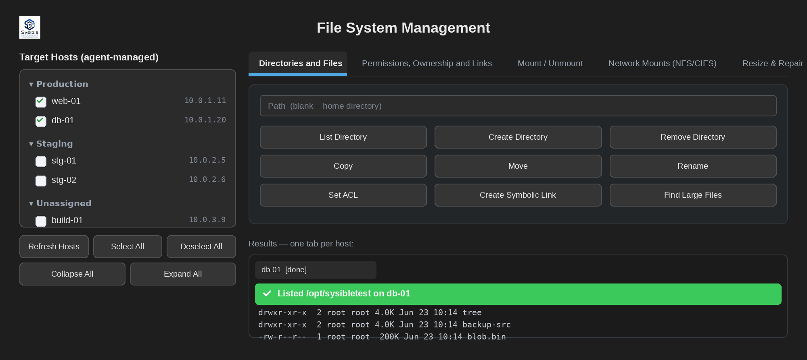
Open System Administration → File System Management.
Check one or more hosts in the Target Hosts list (use Select All for the whole fleet).
Start in Directories and Files — List Directory shows a path's contents; then create/copy/move/rename. Separate tabs cover permissions/links, Mount / Unmount, Network Mounts (NFS/CIFS), Resize & Repair, Disk Usage, fstab/quotas, and archives.
Storage Administration
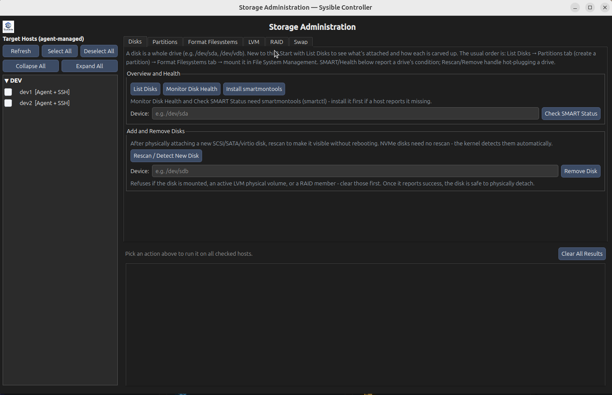
Open System Administration → Storage Administration.
Check one or more hosts in the Target Hosts list (use Select All for the whole fleet).
Work through the tabs: Disks (and SMART), Partitions, Format, LVM, RAID, Swap. Enter a device like /dev/sdb and click the action.
Firewall Administration
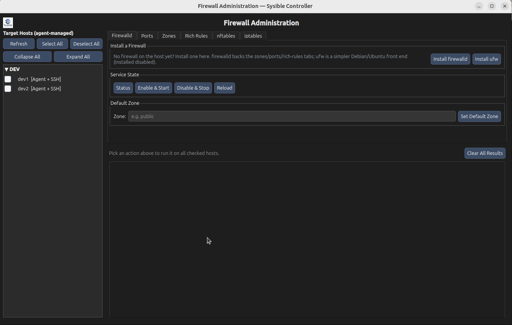
Open System Administration → Firewall Administration.
Check one or more hosts in the Target Hosts list (use Select All for the whole fleet).
Use Firewalld/Ports to Open Port / Close Port and Reload; Zones, Rich Rules, and raw nftables/iptables tabs are there for advanced rules.
Security Administration
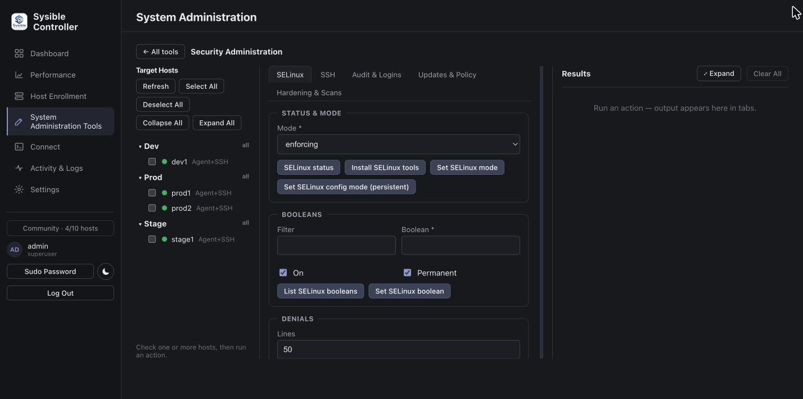
Open System Administration → Security Administration.
Check one or more hosts in the Target Hosts list (use Select All for the whole fleet).
Check one or more hosts in the Target Hosts list (use Select All for the whole fleet).
Set a source and destination and click Back Up, then Verify or Restore; the other tabs cover LVM snapshots and scheduled/DR drills.
Time Synchronization
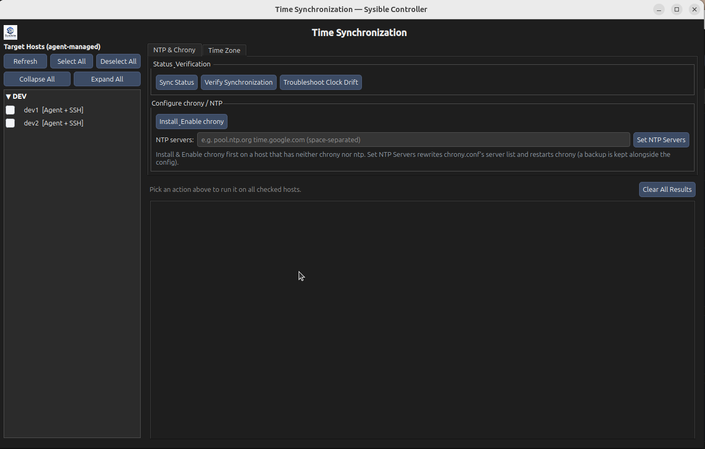
Open System Administration → Time Synchronization.
Check one or more hosts in the Target Hosts list (use Select All for the whole fleet).
Click Sync Status / Verify Synchronization, then Set NTP Servers or Set Time Zone as needed.
Certificate Management
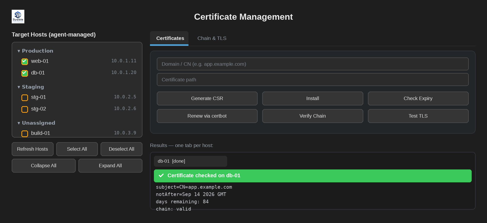
Open System Administration → Certificate Management.
Check one or more hosts in the Target Hosts list (use Select All for the whole fleet).
Click Generate CSR, Install, or Check Expiry; the Chain & TLS tab verifies chains and troubleshoots endpoints.
Containers & VMs
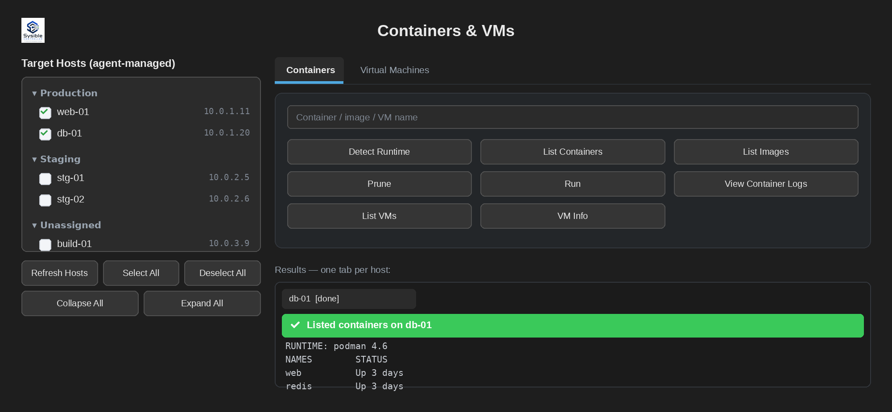
Open System Administration → Containers & VMs.
Check one or more hosts in the Target Hosts list (use Select All for the whole fleet).
Click Detect Runtime, then List Containers, View Container Logs, Run, or Prune; the Virtual Machines tab manages libvirt VMs.
Directory Services (Active Directory / LDAP)
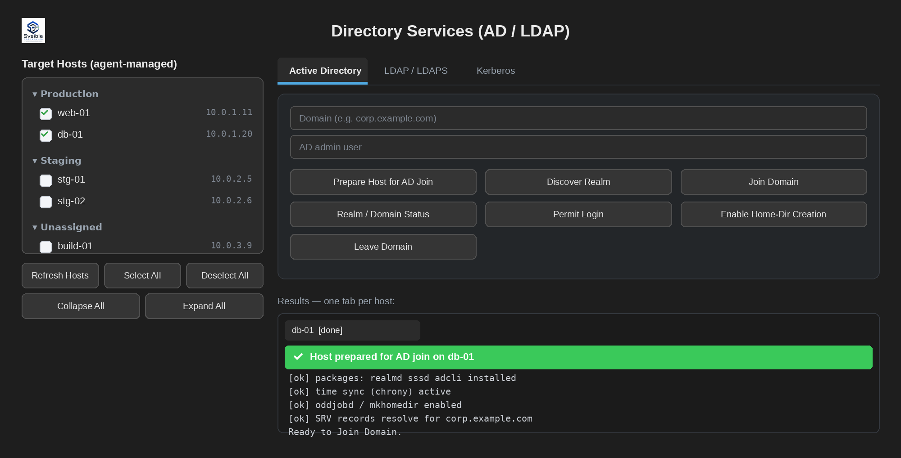
Open System Administration → Directory Services and check the target hosts.
Click Prepare Host for AD Join first — it installs the tooling, syncs time, enables home-dir creation, and verifies the domain's SRV records resolve.
With a clean readiness report, click Join Domain then Permit Login; the LDAP / LDAPS and Kerberos tabs configure and test identity.
Distro Subscription & Licensing
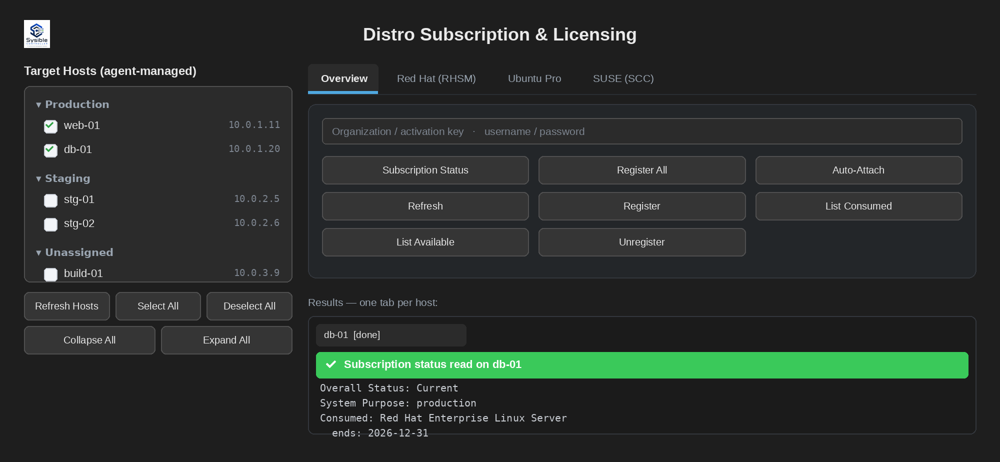
Open System Administration → Distro Subscription & Licensing.
On Overview, click Detect Distro & Subscription Tools to see which vendor applies; check the hosts to act on.
Use the matching tab — Red Hat (RHSM) (Register All registers + auto-attaches every checked host at once), Ubuntu Pro (attach a token, enable services), or SUSE (SCC) (register a reg-code) — then Status / List to confirm.
Sysible Controller Settings
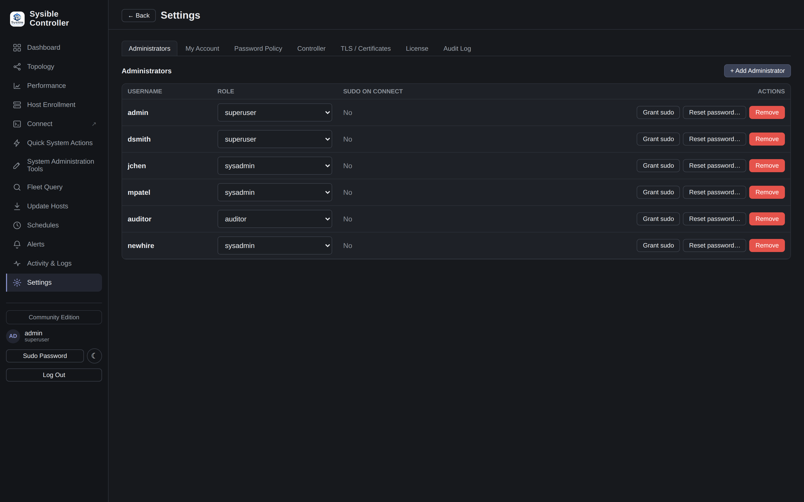
Open Sysible Controller Settings from the Dashboard.
Set the controller address/port, and add administrators choosing a role — Superuser (manage admins, see live logs) or Sysadmin (fleet tools only). Tune the admin password policy.
Review the Audit Log and record a license key under License & Version.
Webserver Portal
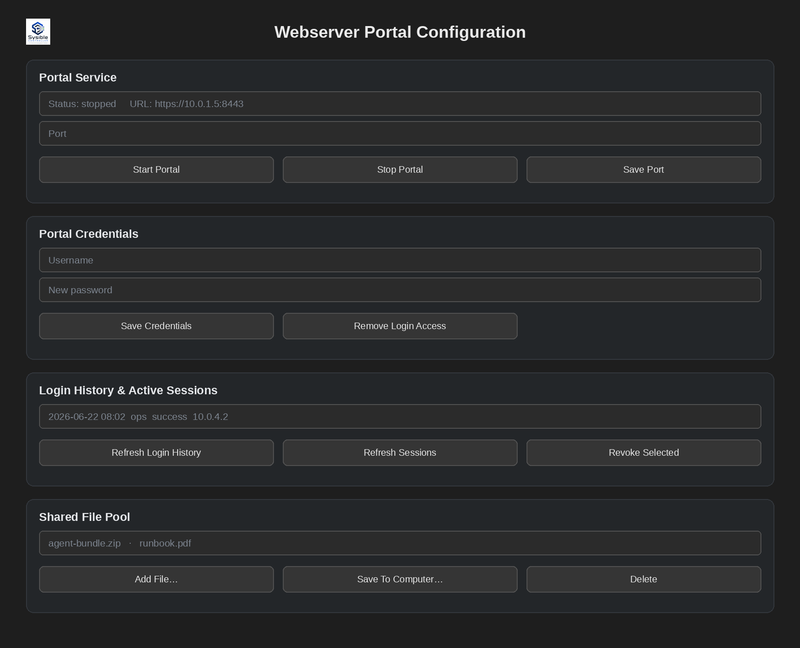
Open Webserver Portal Configuration from the Dashboard.
Set a port and credentials, then click Start Portal.
Share the URL with host operators; manage the shared file pool and review login history/sessions here.